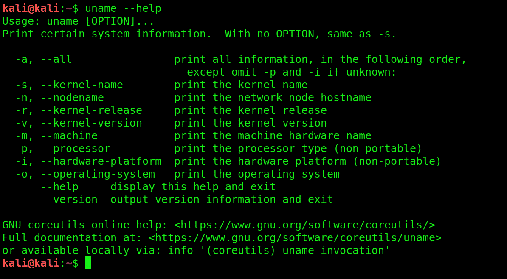

About
- My website

- Our website is for the people who want to learn about Artificial Intelligence and Machine Learning.
On our website you will be getting various articles and stuffs. Other than this you can learn more
about Artificial Intelligence and Machine Learning from our site and get to know various new things
about Artificial Intellligence and Machine Learning.
Our aim to spread knowledge regarding Artificial Intelligence and Machine Learning to the people who
are unaware about this and also to the future generation. Artificial Intelligence and Machine
Learning are one of the most booming industries these days. With the help of this many countries are
taking there technology to next level and India is one of them.

- Most of the people have already mastered this skill and they are doing great in there field and
working for the betterment of the country and you have a chance to do so.
Artificial intelligence is shaping the future of humanity across nearly every industry. It is
already the main driver of emerging technologies like big data, robotics and IoT, and it will
continue to act as a technological innovator for the foreseeable future. so.our making it available
on our website for makes students to learn more about ai and machine learning.we are working on this
since 4 years to gather the information and uploading on our website.our moto is to give more
knowledge to our users.
- Core Courses available

- Linux is a community of open-source Unix like operat ing systems that are based on the Linux Kernel.
It was initially released by Linus Torvalds on September 17, 1991. It is a free and open-source
operating system and the source code can be modified and distributed to anyone commercially or
noncommercially under the GNU General Public License.
Initially, Linux was created for personal computers and gradually it was used in other machines like
servers, mainframe computers, supercomputers, etc. Nowadays, Linux is also used in embedded systems
like routers, automation controls, televisions, digital video recorders, video game consoles,
smartwatches, etc. The biggest success of Linux is Android(operating system) it is based on the
Linux kernel that is running on smartphones and tablets. Due to android Linux has the largest
installed base of
- The transport layer provides services to the application layer and takes services from the network
layer. The data in the transport layer is referred to as Segments. It is responsible for the End to
End Delivery of the complete message. The transport layer also provides the acknowledgement of the
successful data transmission and re-transmits the data if an error is found.
At sender’s side: Transport layer receives the formatted data from the upper layers, performs
Segmentation, and also implements Flow & Error control to ensure proper data transmission. It also
adds Source and Destination port numbers in its header and forwards the segmented data to the
Network Layer.